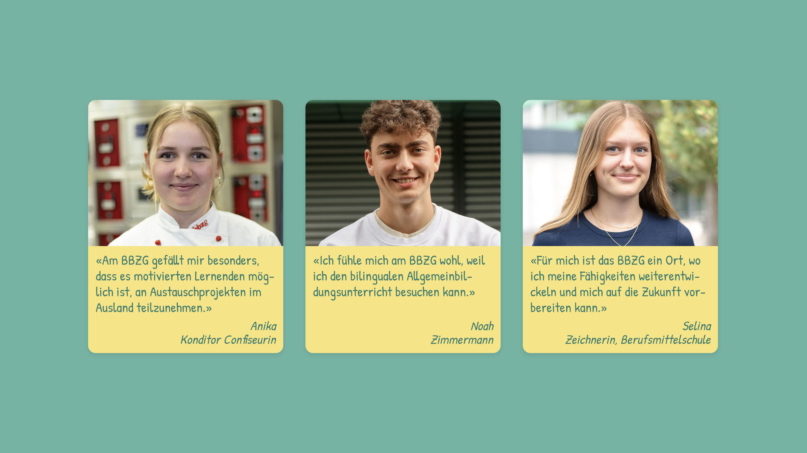
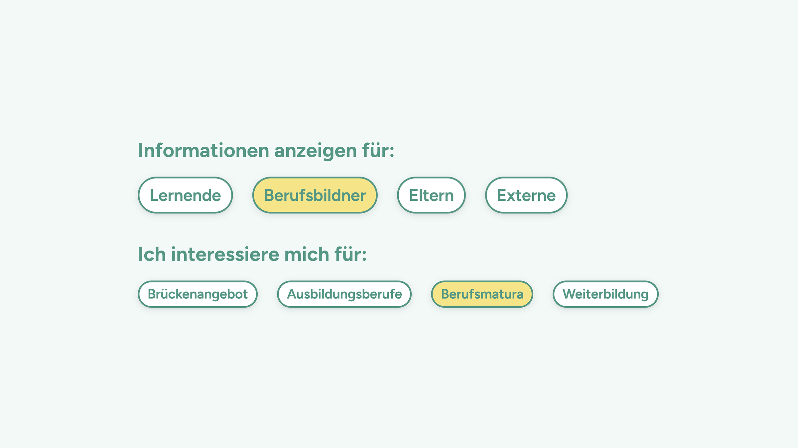
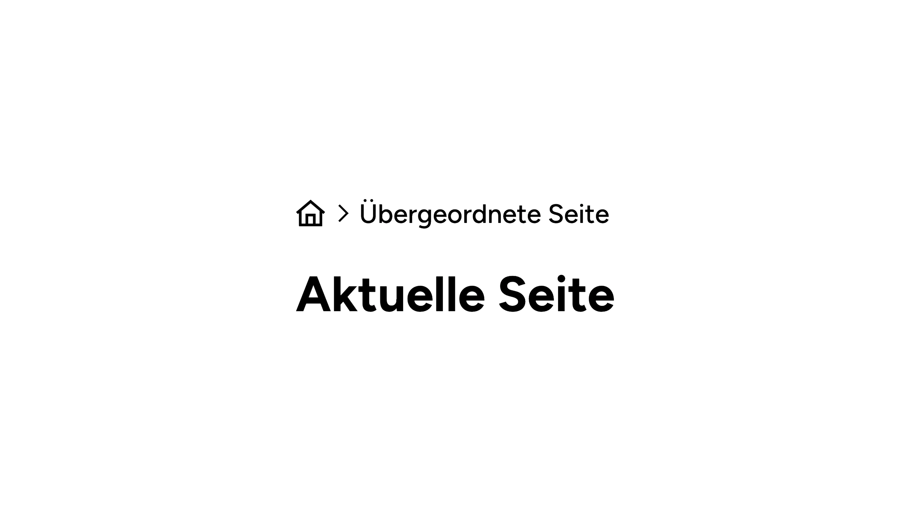

Theme
Unsere Basis für individuelle Webauftritte: modular aufgebaut, performant und vollständig kompatibel mit dem Full Site Editing-Ansatz von WordPress.
Block-Plugins
Eigene Gutenberg-Blöcke für flexible Inhalte, optimierte Redaktionsabläufe und konsistente Gestaltung. Alle Blöcke folgen einem einheitlichen Architektur- und Designsystem.
Messstation Block
Block zur Anzeige von Messwerten (Temperatur, Wasserstand usw.) aus einer JSON-Datenquelle.

MuotaMap Block
Interaktiver Karten-Block auf Basis von Leaflet.js. Zeigt einzelne Standorte oder Sammlungen mit Markern und Routen.

Personal Card Block
Block zur Darstellung von Personenkarten mit Bild und Kontaktdaten.

Teaser-Card in Cover Block
Block zur Anzeige eines Beitrags oder Projekts innerhalb eines Cover-Blocks – mit Titel und „Mehr“-Link.
Projekte- & Magazin-Loop Block
Dynamischer Loop-Block für Projekte, Magazin & Erleben.
Loop Block
Gibt Beiträge, Seiten oder CPTs dynamisch im gewünschten Layout aus.

Content for Loop Block
Universeller Inhalts-Block für Loops wie News, Veranstaltungen oder Unterseiten.
Carousel Block
Erstellt responsive Slider mit Swiper.js.

Image Rotator Block
Block zum zufälligen Rotieren mehrerer Bilder mit optionalem Text und Button, zeitlich steuerbar.

Wohnung Block
Block zur Darstellung von Ferien- und Mietwohnungen mit Bildern, Beschreibung und Kontaktdaten.

Link Block
Block für interne, externe und Medien-Links. Unterstützt Anzeigetext, Beschreibung, automatische Icons und Tagging.

Tag basierte Links Block
Zeigt alle Link-Blöcke an, die mit Tags verknüpft sind. Eignet sich zur strukturierten Darstellung themenbezogener Links.
Accordion Block
Interaktiver Akkordeon-Block mit animierter Höhe.

Contact Card Block
Zeigt Kontaktinfos zu Vereinen oder Musikgruppen.
Filter Tag Block
Klickbares Filter-Element mit Label und zugewiesenem Tag, z. B. für Inhaltsfilterung mit Isotope.js.

Toggle Container Block
Ein Container-Block mit zwei umschaltbaren Ansichten, die unabhängig voneinander mit Inhalten gefüllt werden können.

Datetime Block
Block zur Eingabe von Start- und Enddatum mit optionalem Anzeigetext.
Breadcrumb Block
Zeigt den Navigationspfad einer Seite an.

Wellen-Grafik Block
Erzeugt eine anpassbare SVG-Welle als Trenner zwischen Inhaltsbereichen. Farbe, Position und Ausrichtung sind direkt im Editor wählbar.
Plugins
Erweiterungen, die WordPress funktional ergänzen – zum Beispiel zur Automatisierung, Verwaltung oder Datenintegration.

Beitragsauszeichnung
Hebt Beiträge oder Blöcke visuell hervor.

Beitragsverfall
Steuert den Ablauf von Beiträgen automatisch.

Priority Manager
Erweiterung zur Verwaltung von Prioritäten für Medien, Beiträge und weitere Inhaltstypen.

Shared Api
Gemeinsame REST-API für UD-Blöcke, z. B. zur Verwaltung globaler Tags.